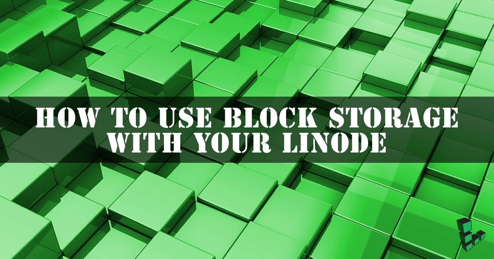
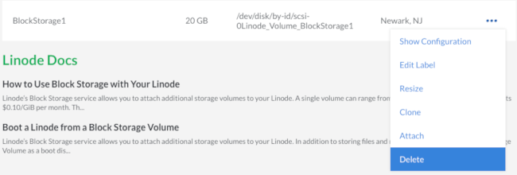
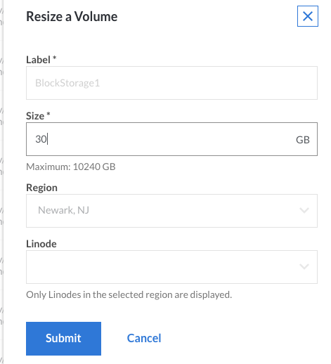
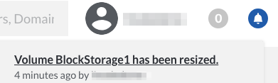

How to Use Block Storage with Your Linode
Updated by Linode Written by Linode

Linode’s Block Storage service allows you to attach additional storage Volumes to your Linode. A single Volume can range from 10 GiB to 10,000 GiB in size and costs $0.10/GiB per month. They can be partitioned however you like and can accommodate any filesystem type you choose. Up to eight Volumes can be attached to a single Linode, be it new or already existing, so you do not need to recreate your server to add a Block Storage Volume.
The Block Storage service is currently available in the Dallas, Fremont, Frankfurt, London, Newark, and Singapore data centers.
Caution
Linode’s backup services do not cover Block Storage Volumes. You must execute your own backups for this data.
Your Linode must be running in Paravirtualization mode. Block storage currently does not support Full-virtualization.
How to Add a Block Storage Volume to a Linode
This guide assumes a Linode with the root disk mounted as /dev/sda and swap space mounted as /dev/sdb. In this scenario, the Block Storage Volume will be available to the operating system as /dev/disk/by-id/scsi-0Linode_Volume_EXAMPLE, where EXAMPLE is a label you assign the Volume in the Linode Cloud Manager. Storage Volumes can be added when your Linode is already running, and will show immediately in /dev/disk/by-id/.
Add a Volume from the Linode Detail Page
Click on the Linodes link in the sidebar.
Select the Linode to which you want to attach a Block Storage Volume. The detail page for the Linode will appear.
Click on the Volumes tab, then click Add a Volume:
Assign the Block Storage Volume a label and size. The label can be up to 32 characters long and consist only of ASCII characters
a-z; 0-9.-_. The maximum Volume size is 10,000 GiB. When finished, click Submit:Note
There is currently a soft limit of 100 TB of Block Storage Volume per account.Once you add a Volume it will appear under Attached Volumes with the new Volume’s label, size, and file system path.
You’ll need to create a filesystem in your new Volume. If your Linode is not already running, boot then SSH into your Linode and execute the following command, where
FILE_SYSTEM_PATHis your Volume’s file system path:mkfs.ext4 FILE_SYSTEM_PATHOnce the Volume has a filesystem, you can create a mountpoint for it:
mkdir /mnt/BlockStorage1You can then mount the new Volume:
mount FILE_SYSTEM_PATH /mnt/BlockStorage1If you want to mount the new Volume automatically every time your Linode boots, you’ll want to add the following line to your /etc/fstab file:
FILE_SYSTEM_PATH /mnt/BlockStorage1 ext4 defaults 0 2Note
If you plan on detaching the volume regularly or moving it between other Linodes, you may want to consider adding the flags
noatimeandnofailto the /etc/fstab entry.noatime- This will save space and time by preventing writes made to the filesystem for data being read on the volume.nofail- If the volume is not attached, this will allow your server to boot/reboot normally without hanging at dependency failures if the volume is not attached.
Example:
FILE_SYSTEM_PATH /mnt/BlockStorage1 ext4 defaults,noatime,nofail 0 2
{kind=link}
{kind=link}
{kind=link}
{kind=link}
Attach a Volume from Your Account’s Volume List
Click on the Volumes link in the sidebar to see your account’s Volume list:
Click the more options ellipsis to open the menu for the Volume you want to attach to a Linode and select Attach:
Select the label of the Linode you want to attach the Volume to from the dropdown menu, then click Save:
Note
The Linodes available in this dropdown menu all share the same region as your Volume.You’ll need to create a filesystem in your new Volume. If your Linode is not already running, boot then SSH into your Linode and execute the following command, where
FILE_SYSTEM_PATHis your Volume’s file system path:mkfs.ext4 FILE_SYSTEM_PATHOnce the Volume has a filesystem, you can create a mountpoint for it:
mkdir /mnt/BlockStorage1You can then mount the new Volume, where
FILE_SYSTEM_PATHis your Volume’s file system path:mount FILE_SYSTEM_PATH /mnt/BlockStorage1If you want to mount the new Volume automatically every time your Linode boots, you’ll want to add the following line to your /etc/fstab file:
FILE_SYSTEM_PATH /mnt/BlockStorage1
{kind=link}
{kind=link}
{kind=link}
How to Detach a Block Storage Volume from a Linode
Go to the detail page page of the Linode which the Volume is attached to. Shut down the Linode.
When the Linode is powered off, click on the Volumes tab, click the more options ellipsis next to the Volume you would like to detach, then click Detach.
A confirmation screen appears and explains that the Volume will be detached from the Linode. Click Detach to confirm:
The Linode’s dashboard does not show the Volume present anymore:
The Volume still exists on your account and you can see it if you view the Volumes page:
Caution
To avoid issues with your Linode, remove this line from your
/etc/fstab/configuration:FILE_SYSTEM_PATH /mnt/BlockStorage1 ext4 defaults 0 2How to Delete a Block Storage Volume
{kind=link}
{kind=link}
{kind=link}
CautionThe removal process is irreversible, and the data will be permanently deleted.
Shut down the attached Linode.
Detach the Volume as described above.
On the Volumes page, click the more options ellipsis next to the Volume you would like to delete.
Click Delete.

How to Resize a Block Storage Volume
Storage Volumes cannot be sized down, only up. Keep this in mind when sizing your Volumes.
Shut down your Linode.
Click the more options ellipsis next to the Volume you would like to resize to bring up the Volume’s menu.
Click Resize.
Enter the new Volume size. The minimum size is 10 GiB and maximum is 10,000 GiB. Then click Submit.

You’ll be returned to the Volume list and the notification bell in the top right of the page will notify you when the resizing is complete.

Reboot your Linode.
Once your Linode has restarted, make sure the Volume is unmounted for safety:
umount /dev/disk/by-id/scsi-0Linode_Volume_BlockStorage1Assuming you have an ext2, ext3, or ext4 partition,first run a file system check:
e2fsck -f /dev/disk/by-id/scsi-0Linode_Volume_BlockStorage1Then resize it to fill the new Volume size:
resize2fs /dev/disk/by-id/scsi-0Linode_Volume_BlockStorage1Mount your volume back onto the filesystem:
mount /dev/disk/by-id/scsi-0Linode_Volume_BlockStorage1 /mnt/BlockStorage1
{kind=link}
Where to Go From Here?
Need ideas for what to do with space? We have several guides which walk you through installing software that would make a great pairing with large storage Volumes:
Join our Community
Find answers, ask questions, and help others.
The Linode Classic ManagerIf you're using the Linode Classic Manager instead of the new Cloud Manager, you can still view the Classic Manager version of this How to Use Block Storage with Your Linode guide.
This guide is published under a CC BY-ND 4.0 license.